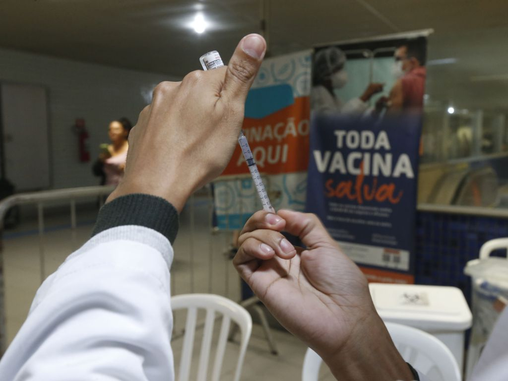
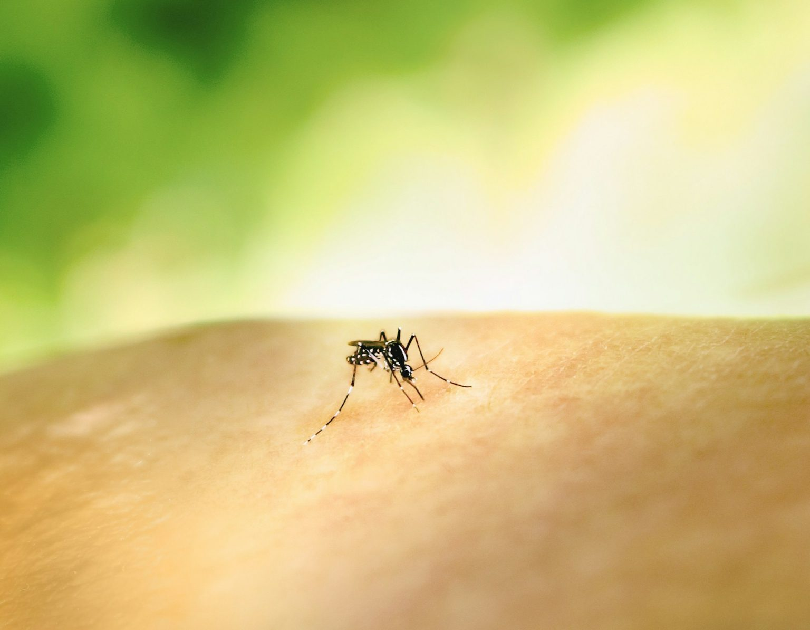
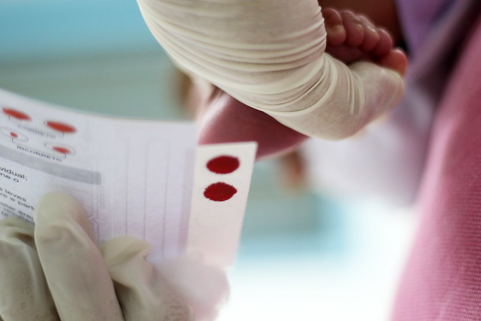

Portfólio

Butantan e Fiocruz analisam capacidade máxima de produção de vacina contra dengue
Segundo secretário do Ministério da Saúde, a agenda de inovação, que inclui a produção de vacinas em solo nacional, é ‘prioridade máxima’ da pasta
Comissão do Senado aprova projeto sobre tratamento de doenças neuromusculares
Proposta prevê que pacientes devem receber ‘medicamentos e equipamentos essenciais à sobrevivência’ do SUS em casa

Governo de SP decreta emergência em saúde pública por causa da dengue
A medida veio após o estado alcançar 300 casos por 100 mil habitantes na segunda-feira (4/3)

Ministério da Saúde, estados e municípios lançam revisão da triagem neonatal
Além de revisar a política, os objetivos passam por promover o diagnóstico precoce e a atenção integral na rede pública